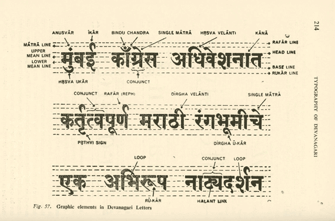
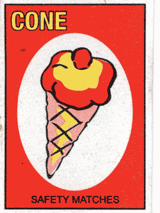

With its large and limitless character set, many moving parts, and complex shapes, Devanagari script can feel intimidating to someone new to it. The lack of common terms for the anatomy of its letters and their metrics only makes this problem worse. The issue of terminology is also faced by those who are native or fluent: How do I describe to someone a part of letter if we don’t have a shared vocabulary? It is not as if no terminology exists, but it hasn’t gained the same currency as its Latin counterpart. To that end, this article is an attempt to simplify and unify the nomenclature for the metrics and anatomy of Devanagari letterforms.
 S. N. Bhagwat is usually credited with doing the first graphical analysis of Devanagari letterforms, albeit these were handwritten and not typographic. In his analysis from 1961, Bhagwat divided letterforms into categories based on their construction and shape, as well as created a scheme for anatomy. A more fine-tuned version of the same approach is seen in the work of Bapurao Naik, author of the monumental three-volume work Typography in Devanagari, published a decade later in 1971. Naik put the basic Devanagari letters into five categories based on their vertical stem and how it interacts with other strokes. These categories are full bar with attached strokes, full bar with detached strokes, short bar, bar in the centre, and without a bar.